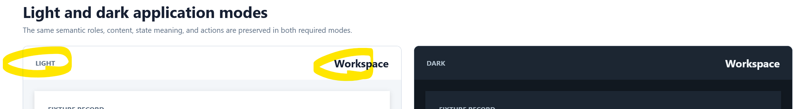

Color and theme Header responsibility comparison
The product identity stays in the leading Header region; theme state moves to the trailing utility region.


The product identity stays in the leading Header region; theme state moves to the trailing utility region.
